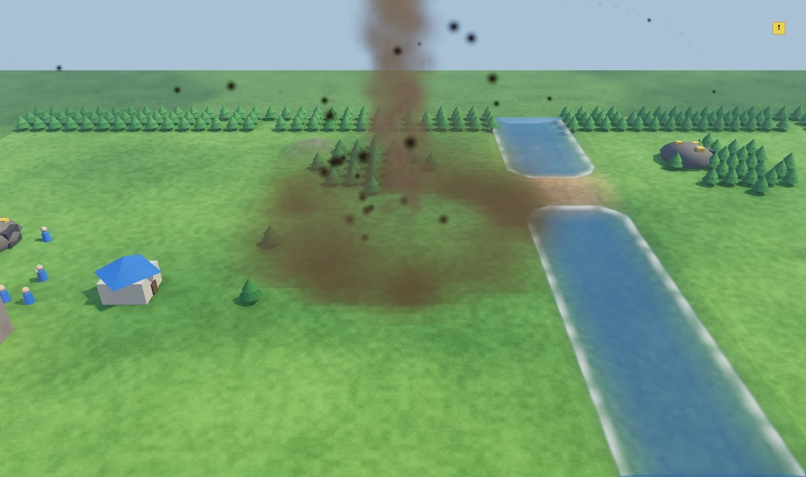
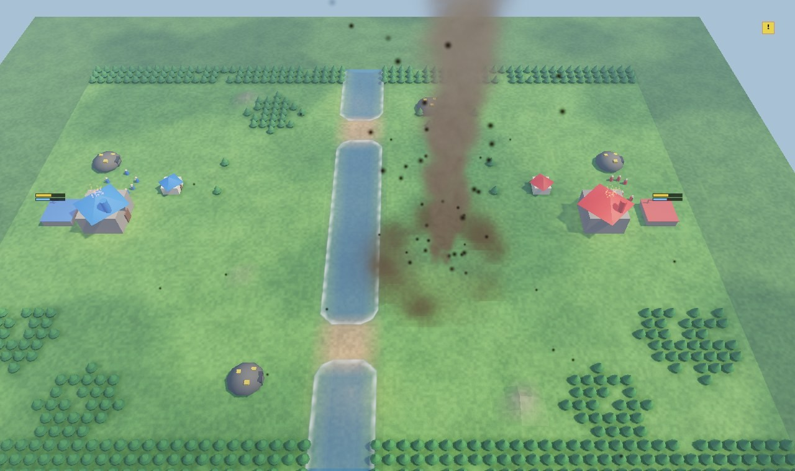

PHYSIS: смерч
В PHYSIS появился смерч: он задаётся в данных карты, ходит по маршруту или блуждает, закручивает ветер, раздувает и гасит огонь, вырывает обломки и наносит урон.




Смерч описывается массивом tornadoes в блоке physis карты: центр, радиусы ядра и внешнего кольца, высота, скорость вращения, подъём и затягивание воздуха, время старта и жизни, раскрутка и затухание. Маршрут — прямой снос, блуждание в заданных границах или точки, по кругу или до конца.
Вихрь меняет общий ветер PHYSIS, поэтому его чувствуют все, кто читает ветер: силы, нагрузка на растительность и постройки, трава, частицы. В центре он гасит огонь, в кольце вокруг раздувает. Обломки вырываются у основания, летят с ветром и падают. Лёгкие объекты игры с NatureCarriable он поднимает и уносит. Юниты и здания получают урон через общий хук окружения, в RTS он уже подключён.
В кадре смерч — пылевая воронка с кольцом пыли у земли и летящими обломками, с гулом в пространстве, сильным ветром в траве и волнением на воде рядом. Пример — карта «Tornado Valley» в шаблоне skirmish.
- Проверено
- Клиент игры на Mac (Metal), карта «Tornado Valley»: смерч ходит по маршруту, в кадре от 9 до 24 обломков. Партия с одним сидом повторяется с той же контрольной суммой, повтор записи и восстановление из сохранения сходятся.
- Ограничения
- Урон от смерча пока получают только RTS-игры. Обломки ни с чем не сталкиваются. Изгиб травы, волнение воды и звук отдельно не проверялись. Воронка простая — проект может заменить эффект своим fx/physis_tornado.json.